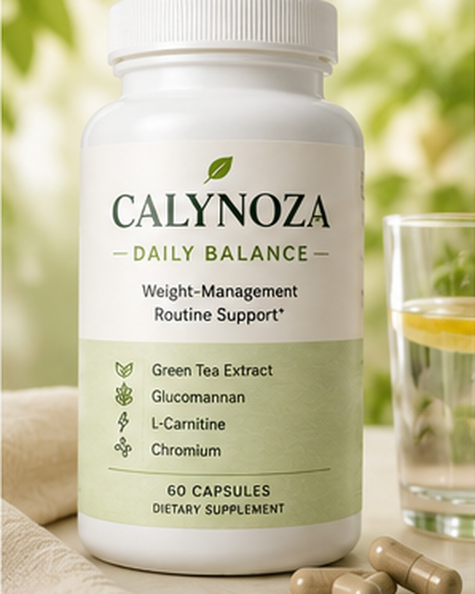
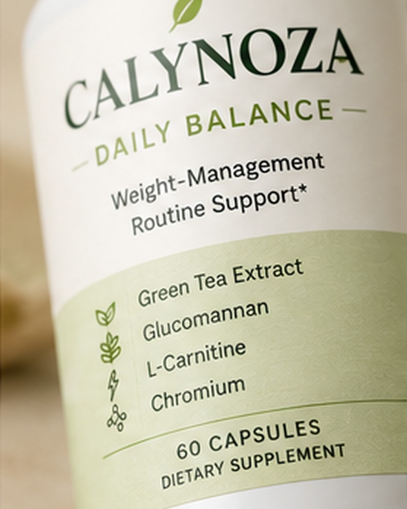
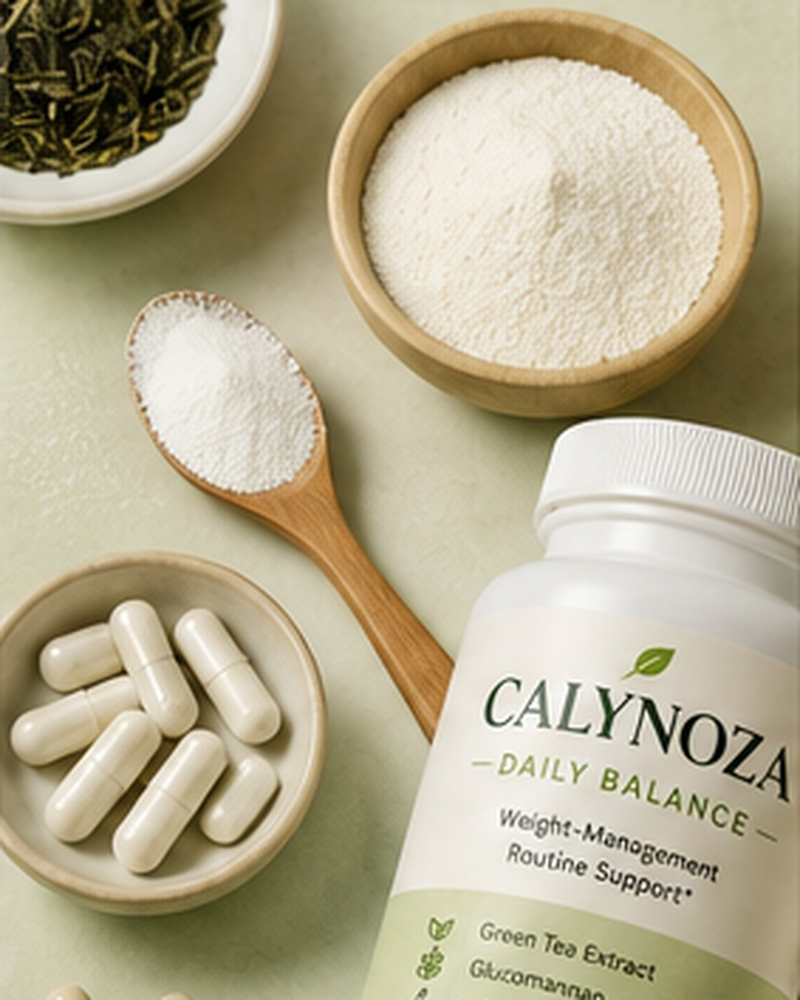
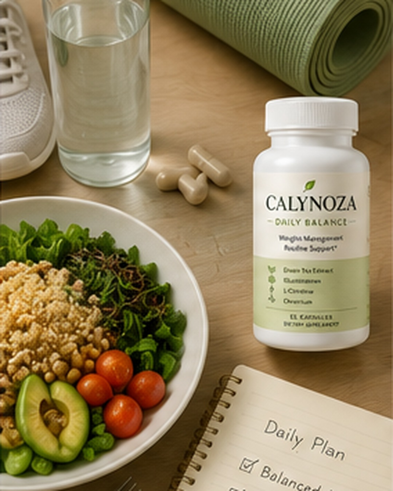
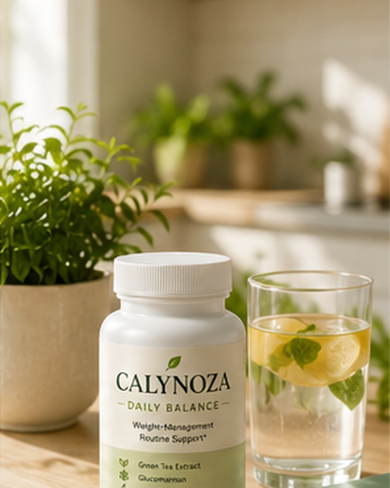

Green Tea Extract
A plant-based ingredient commonly used in wellness formulas for everyday antioxidant support.

Daily wellness support
Daily wellness support for weight-management routines.
Calynoza is a wellness brand focused on daily balance, consistency, and realistic weight-management routines. Calynoza Daily Balance is the brand’s daily supplement product designed for adults building better habits around balanced meals, regular movement, hydration, and consistency.
Learn MoreProduct Facts

Overview
Calynoza Daily Balance is a daily wellness supplement created for adults who want simple support while working on long-term weight-management habits.
It is designed to fit into a realistic routine built around balanced nutrition, regular movement, hydration, sleep, and consistency.
Designed For
Calynoza Daily Balance is not positioned as an extreme diet product or a quick-fix solution.
It is built around the idea that steady daily habits are easier to maintain than short-term, aggressive plans.
Calynoza is designed to support a balanced wellness routine, not replace healthy meals, movement, or professional guidance.
Formula Direction
A simple formula direction inspired by common wellness supplement ingredients.

A plant-based ingredient commonly used in wellness formulas for everyday antioxidant support.
A plant-based fiber often included in weight-management routine products focused on meals and consistency.
An ingredient commonly discussed in relation to energy metabolism and active lifestyles.
An essential trace mineral often associated with macronutrient metabolism support.

Daily Routine
Calynoza Daily Balance is designed to fit alongside simple daily habits that support a more consistent weight-management routine.
Pair daily wellness support with realistic, balanced eating habits.
Stay consistent with movement that fits your lifestyle and schedule.
Build a routine that includes water, meals, and steady daily choices.
Focus on habits that can be repeated over time, not extreme short-term changes.

Brand Approach
Calynoza is built around a calm approach to wellness. No extreme promises. No dramatic claims. No quick-fix positioning.
The focus is simple: daily balance, realistic routines, and consistent habits.
FAQ Preview
Calynoza Daily Balance is a wellness supplement designed for adults building better weight-management habits through balanced nutrition, movement, hydration, and consistency.
Calynoza is not positioned as a quick-fix weight loss pill. It is designed as part of a daily wellness routine for adults working on long-term weight-management habits.
Calynoza Daily Balance is built around a formula direction inspired by Green Tea Extract, Glucomannan, L-Carnitine, and Chromium.
No. Calynoza does not guarantee weight loss. Results vary and weight management depends on many factors, including nutrition, activity, sleep, health status, and consistency.
Important Disclaimer
Calynoza Daily Balance is described for general wellness information only. These statements have not been evaluated by the Food and Drug Administration.
This product is not intended to diagnose, treat, cure, or prevent any disease.
Always consult a qualified healthcare professional before starting any dietary supplement, especially if you are pregnant, nursing, taking medication, or have a medical condition.